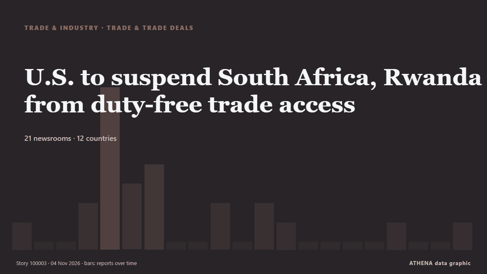

U.S. to suspend South Africa, Rwanda from duty-free trade access

Trump terminates South Africa from AGOA Vusi.Bafetane Mon, 11/02/2026 - 19:32 WASHINGTON - The United States Trade Representative on Monday said Washington would exclude South Africa and Rwanda from… από eNCA
Αναφέρθηκε ανεξάρτητα από 21 μέσα σε 12 χώρες από τις 2 Νοε, πρώτο το eNCA· η κάλυψη εξασθενεί. Το ATHENA εκτιμά τον κίνδυνο μέτριο (2.0/10), κυρίως λόγω της σοβαρότητάς του και της εμβέλειάς του. Βεβαιότητα 88% (υψηλή): το επιβεβαιώνουν 21 ανεξάρτητα μέσα, μέση αξιοπιστία 75%. Μέσα ανά χώρα: Νότια Αφρική (8), Νιγηρία (3), Κίνα (3). Κάλυψη: 2 Νοε έως 4 Νοε, 41 ώρες.
Γιατί έχει σημασία: Οι διαταραχές στο εμπόριο, τη βιομηχανία ή τις υποδομές διαδίδονται στις αλυσίδες εφοδιασμού και αλλάζουν κόστη και χρόνους παράδοσης μακριά.
Τι άλλαξε: 7 νέες αναφορές από 6 μέσα στο 24ωρο έως 4 Νοε.
Πρώτη διατύπωση: SA's AGOA future hangs in the balance as US reviews eligibility
Οι τίτλοι των ειδήσεων παρουσιάζονται στα αγγλικά, όπως δημοσιεύτηκαν.
Με μια ματιά
Επιλέγεται, βαθμολογείται και γράφεται από τη δημοσιευμένη μεθοδολογία του ATHENA. Κανένας συντάκτης δεν παρεμβαίνει σε μεμονωμένα γεγονότα. Πώς παράγεται ›
| 02 Nov 09:50 UTC | 1 |
|---|---|
| 02 Nov 11:50 UTC | 0 |
| 02 Nov 13:50 UTC | 0 |
| 02 Nov 15:50 UTC | 2 |
| 02 Nov 17:50 UTC | 8 |
| 02 Nov 19:50 UTC | 3 |
| 02 Nov 21:50 UTC | 4 |
| 02 Nov 23:50 UTC | 0 |
| 03 Nov 01:50 UTC | 0 |
| 03 Nov 03:50 UTC | 2 |
| 03 Nov 05:50 UTC | 0 |
| 03 Nov 07:50 UTC | 2 |
| 03 Nov 09:50 UTC | 1 |
| 03 Nov 11:50 UTC | 0 |
| 03 Nov 13:50 UTC | 0 |
| 03 Nov 15:50 UTC | 0 |
| 03 Nov 17:50 UTC | 0 |
| 03 Nov 19:50 UTC | 1 |
| 03 Nov 21:50 UTC | 0 |
| 03 Nov 23:50 UTC | 0 |
| 04 Nov 01:50 UTC | 1 |
| 02 Nov 10:59 UTC | 1.0 |
|---|---|
| 03 Nov 21:57 UTC | 2.0 |
| 04 Nov 02:35 UTC | 2.0 |
Γιατί αυτοί οι αριθμοί
Σημασία
Κίνδυνος
Βεβαιότητα
Η κάλυψη — ποιος το ανέφερε και πότε
ο τίτλος όπως δημοσιεύτηκε · ανοίγει το πρωτότυπο- eNCA · Νότια ΑφρικήSA's AGOA future hangs in the balance as US reviews eligibility
- SABC News · Νότια ΑφρικήAGOA trade benefits hang in balance as SA awaits US decision
- eNCA · Νότια ΑφρικήTrump terminates South Africa from AGOA
- SABC News · Νότια ΑφρικήUS announces intention to suspend South Africa, Rwanda from AGOA
- The Citizen (Tanzania) · ΤανζανίαUS plans to suspend South Africa and Rwanda from duty-free trade programme
- The Africa Report · ΓαλλίαUS kicks South Africa, Rwanda out of AGOA
- IOL · Νότια ΑφρικήTrump moves to remove South Africa from AGOA trade programme
- TRT World · ΤουρκίαUS targets South Africa, Rwanda with move to end duty-free trade access
- Punch · ΝιγηρίαUS excludes South Africa, Rwanda from Africa duty-free trade deal
- Daily Maverick · Νότια ΑφρικήLeaving Agoa is a 3.4% tariff bump, not a door slammed on the US market
- Vanguard · ΝιγηρίαUS to exclude S. Africa, Rwanda from Africa duty-free trade deal
- Financial Times - Global economy · Ηνωμένο ΒασίλειοUS moves to strip South Africa and Rwanda of duty-free trade access
- Al Jazeera English · ΚατάρUS to suspend South Africa and Rwanda from duty-free trade access
- DW English · ΓερμανίαUS to drop South Africa, Rwanda from duty-free trade initiative
- APA (English) · ΑζερμπαϊτζάνUS to drop South Africa, Rwanda from AGOA duty-free trade initiative
- The Straits Times · ΣιγκαπούρηUS to suspend South Africa and Rwanda from duty-free trade access
- Daily Maverick · Νότια ΑφρικήTRADE (DIS)AGREEMENT: What now? — Experts weigh in after Trump boots SA from Agoa
- Daily Trust · ΝιγηρίαSouth Africa, Rwanda to be excluded from Africa duty-free trade deal
- Xinhua (English) — page reader · ΚίναU.S. to suspend South Africa, Rwanda from duty-free trade access
- Xinhua (English) — page reader · ΚίναSouth Africa promises support after U.S. decision to suspend trade benefits
- News Diggers · ΖάμπιαUS excludes South Africa, Rwanda from duty-free trade deal
- eNCA · Νότια ΑφρικήAGOA Fallout | Govt must save US duty-free trade deal: Cosatu
- France 24 English · ΓαλλίαSouth Africa braces for some job losses as AGOA ends
- China Daily — page reader · ΚίναUS to suspend South Africa, Rwanda from trade program